Sambla
Internship
Six weeks in Sambla’s New Adventures team, where I designed a brand-new mortgage application from first wireframe to developer handoff, and ended up drawing a character for a widget.
- Deliverables
- Mortgage Application, Prototypes, Illustrations, Widget Character
- Duration
- 6 Weeks
- Team
- New Adventures Team
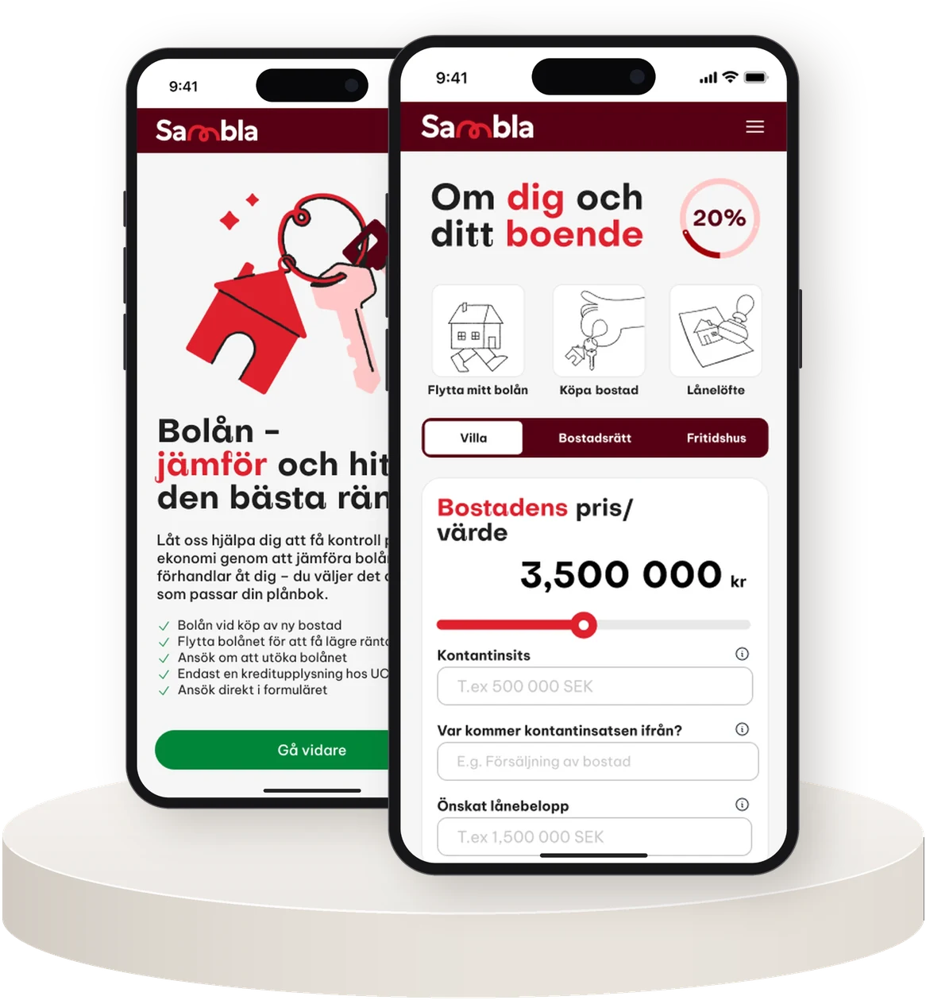
The brief
New Adventures builds new products for the company. My main task was a mortgage application, something Sambla didn’t have before. The process covered benchmarking, iteration and design, and ended with a handoff to the developers.
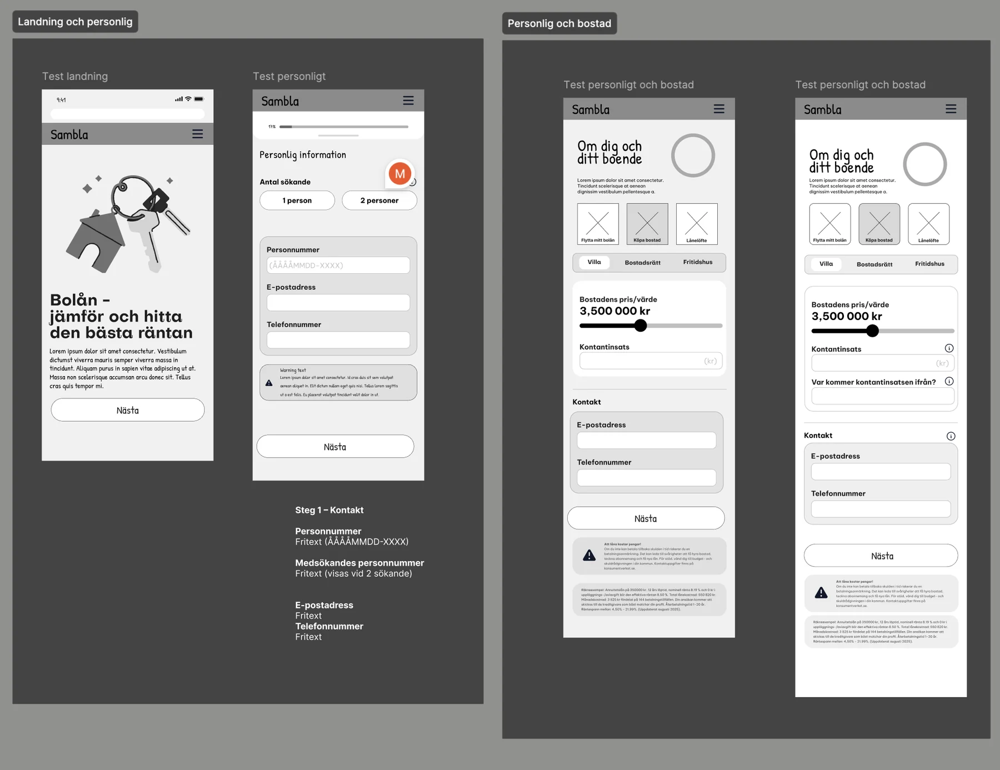
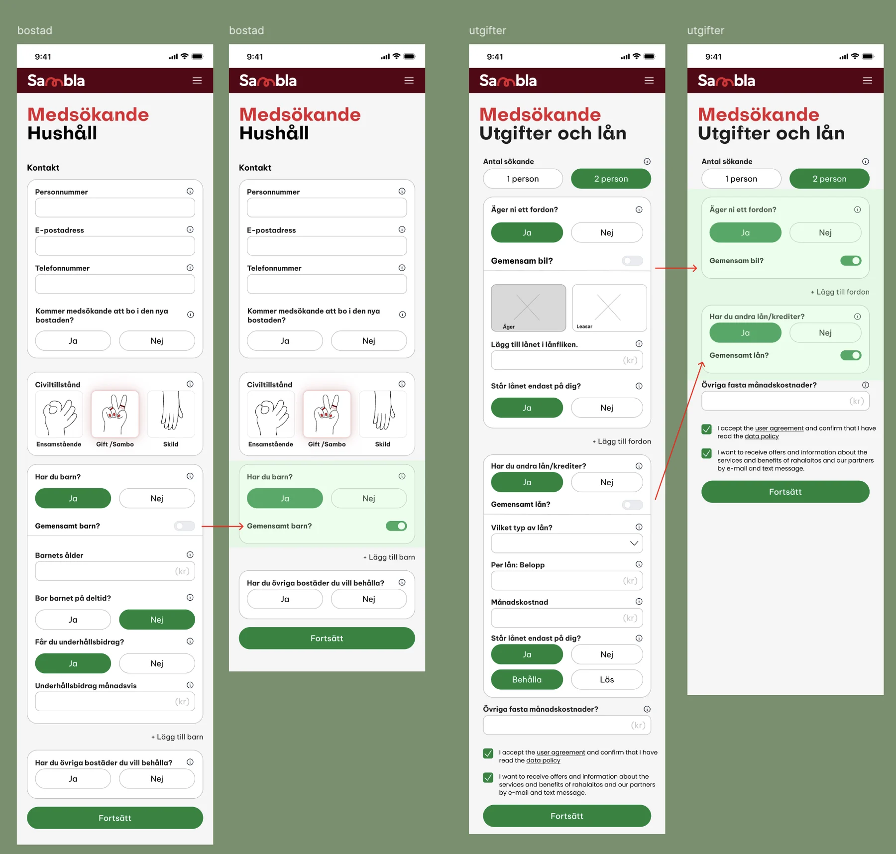
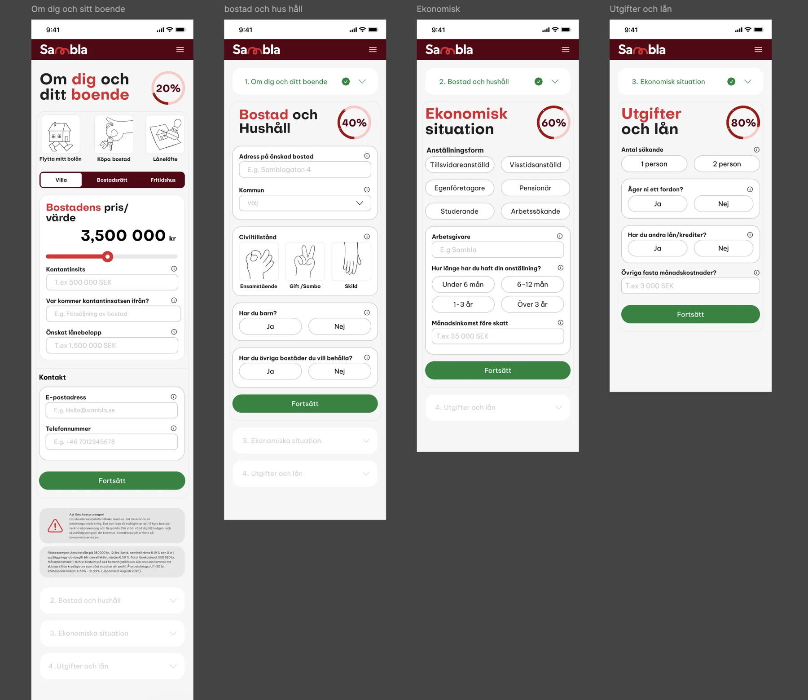
Close to the developers
I got up to speed quickly and finished the application in about two and a half weeks, ahead of plan. Working closely with the developers taught me how the backend shapes design decisions: every choice in a form affects what data is collected and how it’s put together.
We didn’t run our own user interviews. The work built on earlier research and the developers’ experience, a reminder that the process often has to adapt to the circumstances.
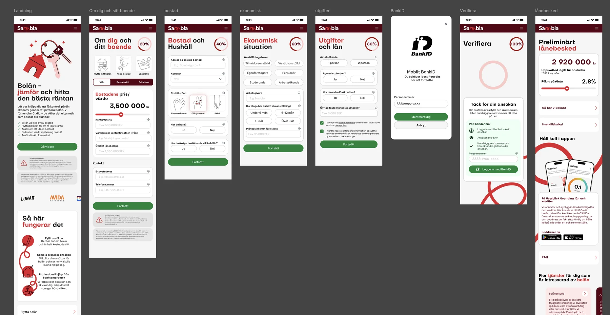
A good job
Along the way I made an illustrated animation, a small “good job” to the user once they were done. It spread internally and was picked up by several departments, and my role grew: next came illustrations for the upcoming rebrand.
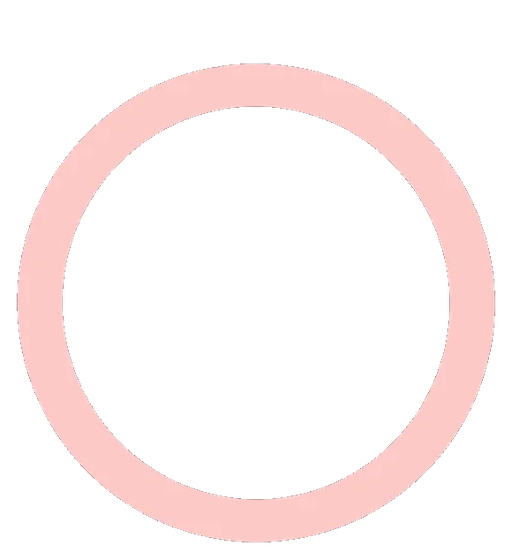
Sam the monkey
I also created a character for a widget that was to be pitched further within the company: a monkey whose mood follows your savings, from “Save soon?” to “Hurray!”, explored in poses, colours and states. The work has carried on after the internship.
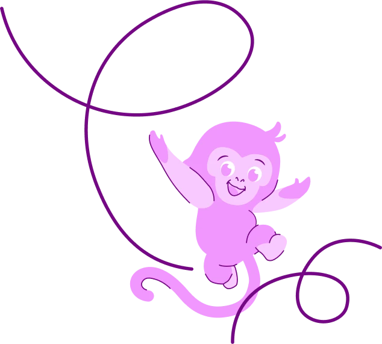
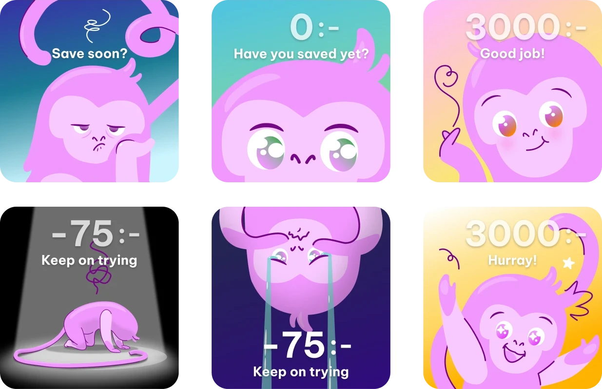
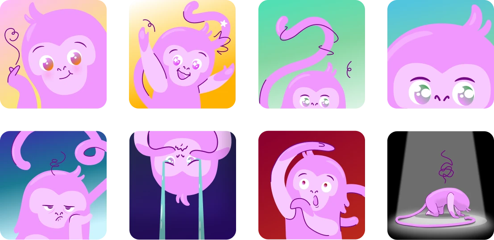
Key learning
Show what you do, even outside your own area. Sharing my work opened doors I hadn’t counted on. I’m taking with me how much it matters to be flexible, take initiative and share actively.
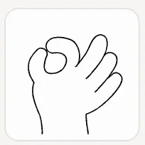
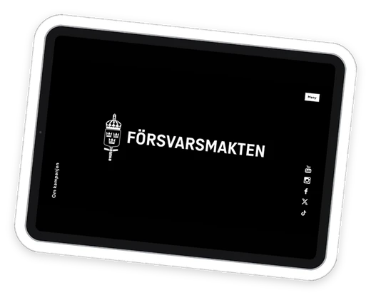